Dióhéjas szívószelep-tisztítás közvetlen befecskendezéses GDI / TSI / TFSI benzin- és dízelmotorokhoz. Nagynyomású levegővel szórt, biológiailag lebomló dióhéj-granulátum — kíméletes a fémhez, könyörtelen a lerakódáshoz. Hengerfej-bontás nélkül.
Közvetlen befecskendezésnél az üzemanyag egyenesen a hengerbe jut — a szívószelepeket többé nem mossa át a benzin. A PCV- és EGR-rendszer olajpárája és kipufogógáza viszont igen, és a forró szelepekre rétegről rétegre ráég: kemény koksszá válik, ami elszűkíti a csatornákat.
Adalékos tisztító ide már nem ér el, a hengerfej-bontás pedig sokszoros költség. A dióhéjas szemcseszórás az egyetlen bontásmentes módszer, amely mechanikusan és maradéktalanul eltávolítja a lerakódást.
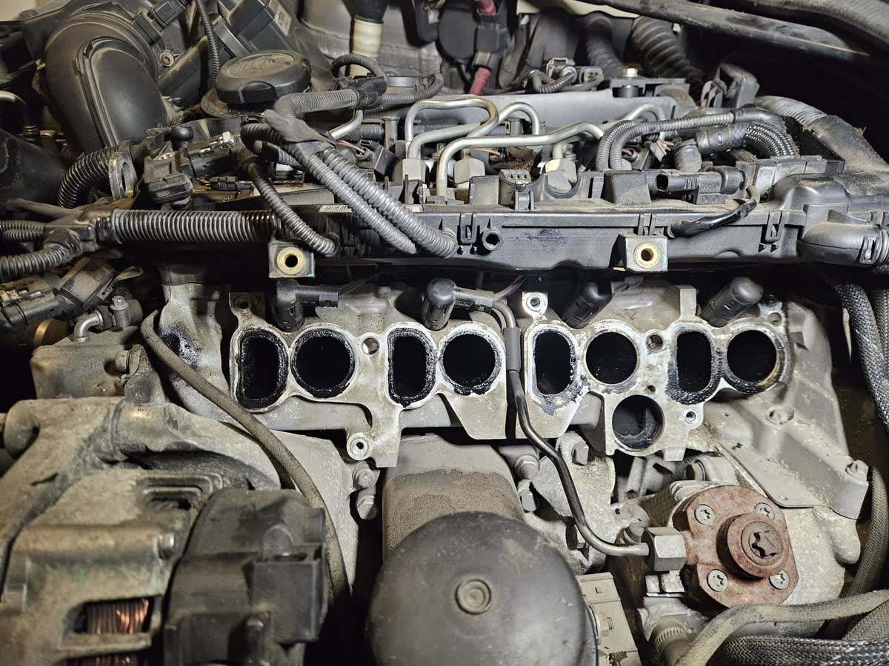
Ha csak egyet is felismersz az alábbiak közül, valószínűleg már most is ezzel küzdesz — és pontosan tudjuk, min mész keresztül.
Rálépsz, és fél másodpercet vár, mielőtt bármi történne. Tudod, hogy ott vannak a lóerők — csak nem engedi ki őket a motor. Ez a legelárulóbb jel, és a legtöbben ilyenkor kezdenek gyanakodni.
Lámpánál állsz, és érzed, ahogy rázkódik alattad az autó. Kellemetlen, és tudod, hogy ez nem így volt régen — csak nem tudod pontosan, mit lehetne ellene tenni.
Ugyanazt az utat jársz, ugyanúgy vezetsz — mégis gyakrabban állsz meg tankolni. Ez nem a képzeleted: a motor egyszerűen többet éget el ugyanahhoz a teljesítményhez.
Hidegben rángat, akadozik, mielőtt beállna az alapjárat. Ismerős érzés, amikor félsz elfordítani a slusszkulcsot, mert nem tudod, ma pont mennyit kell rá várni.
Beviszed diagnosztikára, törlik a hibakódot, pár nap múlva visszajön. Ez a legfrusztrálóbb: amikor úgy érzed, senki nem jut el a probléma gyökeréig — csak a tünetet kezelik.
Ha idáig eljutottál, valószínűleg már máshol is jártál — és nem kaptál igazi választ. Mi pontosan azért csináljuk ezt, mert megértjük, mennyire idegesítő, ha a saját autódban nem bízol többé. Ez nem adalék, nem trükk: ez az egyetlen módszer, ami tényleg a gyökerét kezeli a problémának, bontás nélkül.
Nem stockfotók — ezek a mi kezünk munkái, retusálás nélkül. Vidd az egeret a sávra a megállításhoz, és kattints bármelyik képre a nagyításhoz.
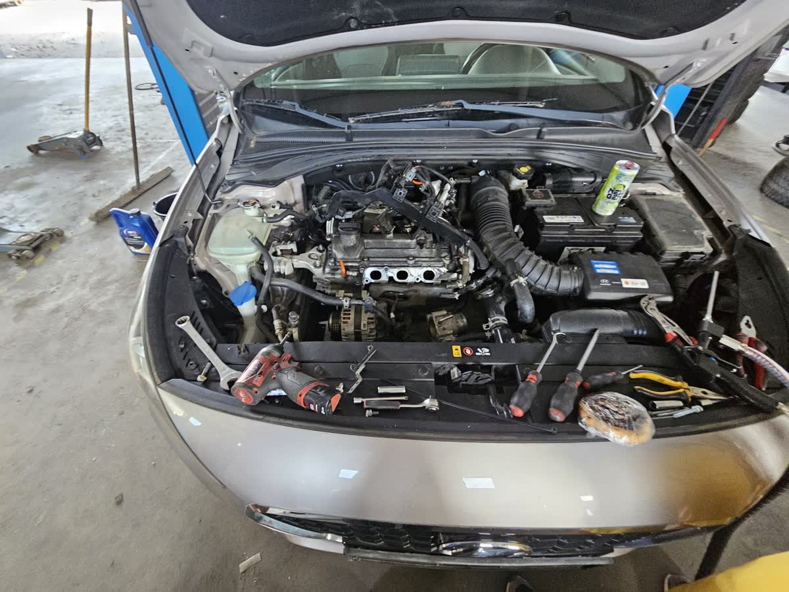
Utána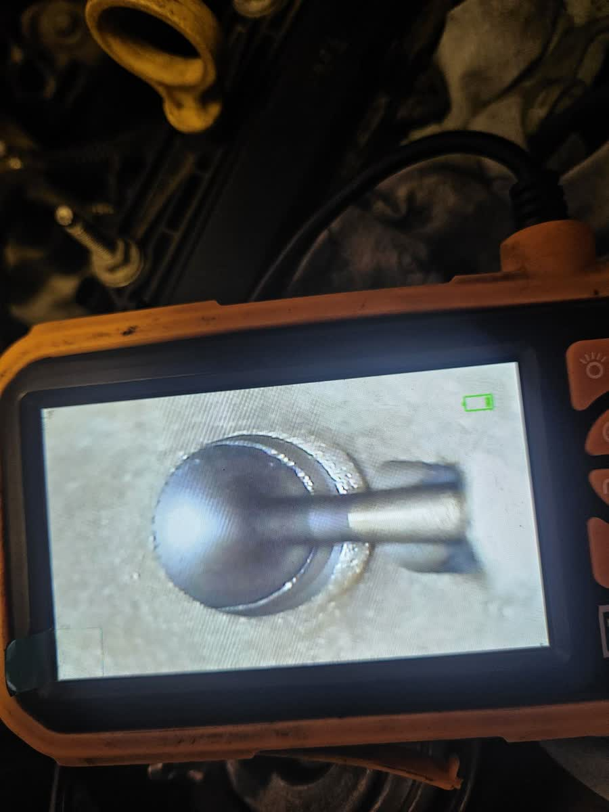
Folyamat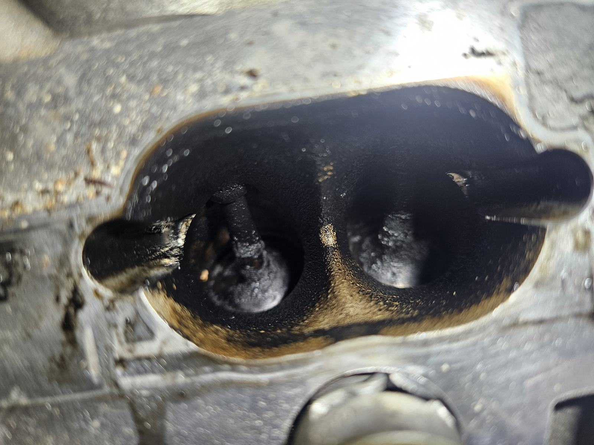
Előtte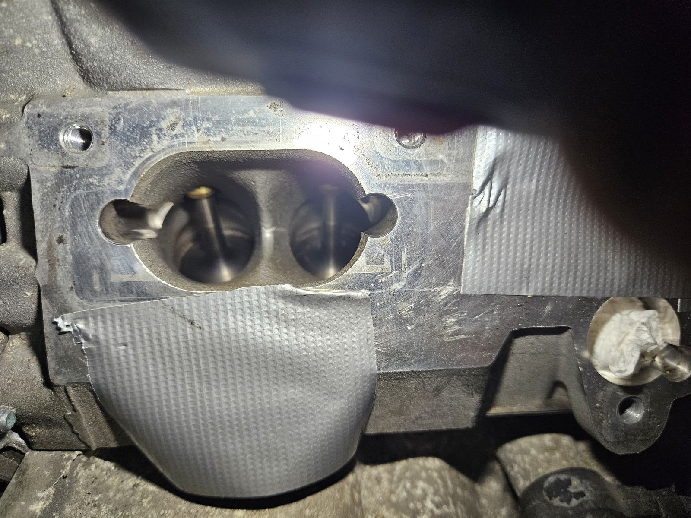
Utána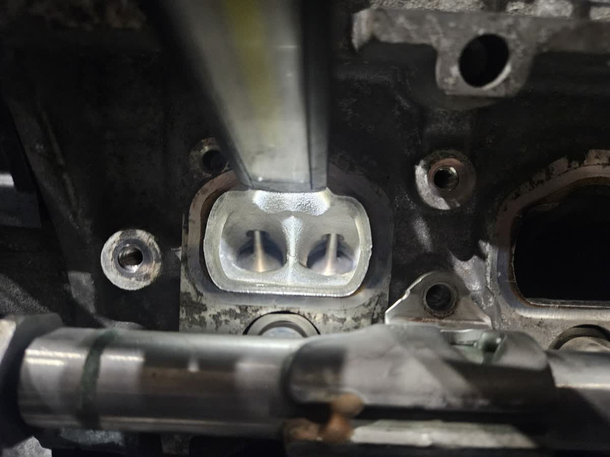
Folyamat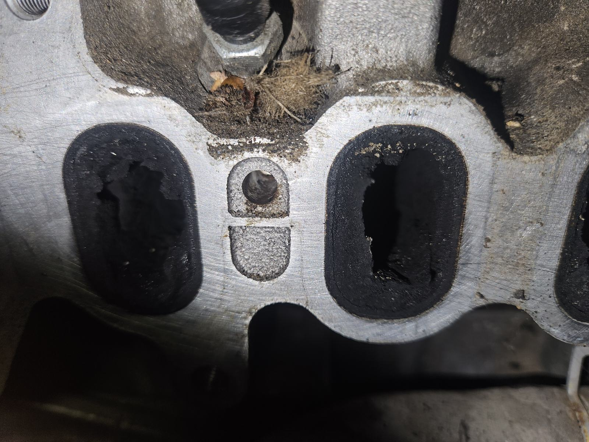
Összevetés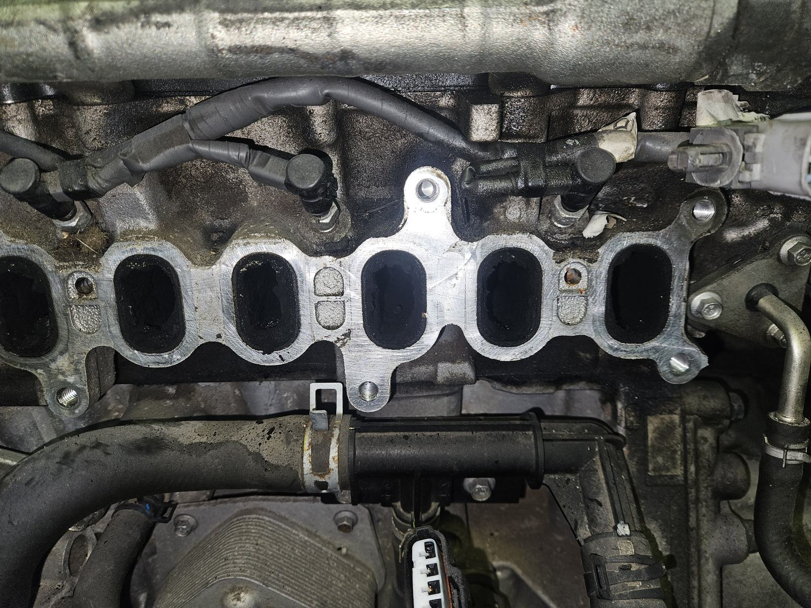
Folyamat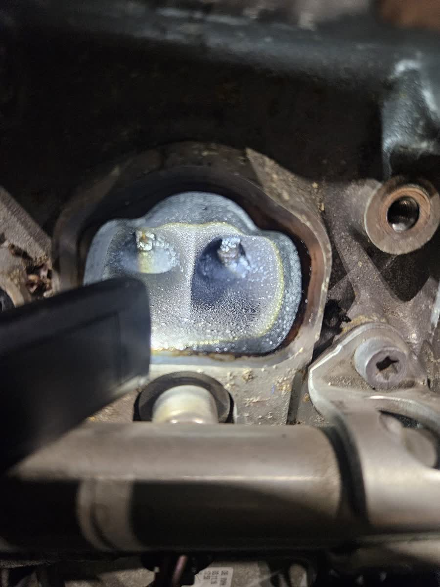
Előtte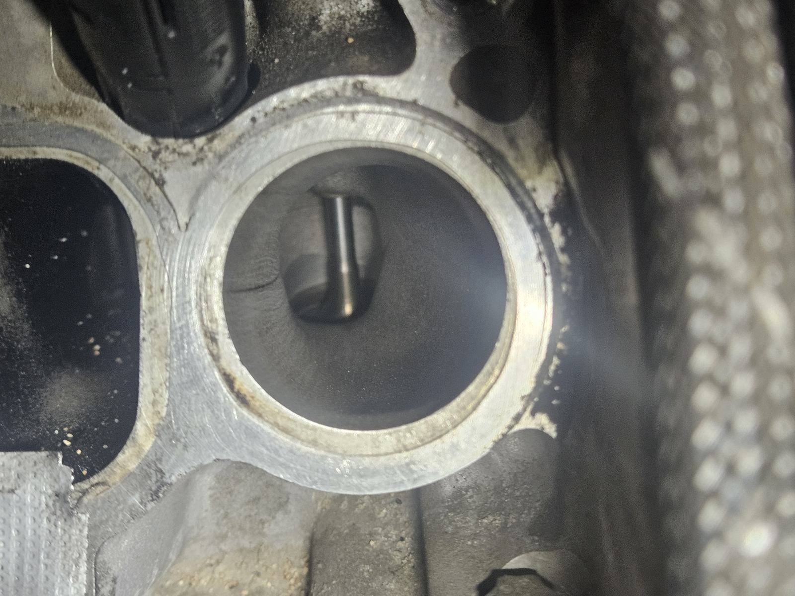
Utána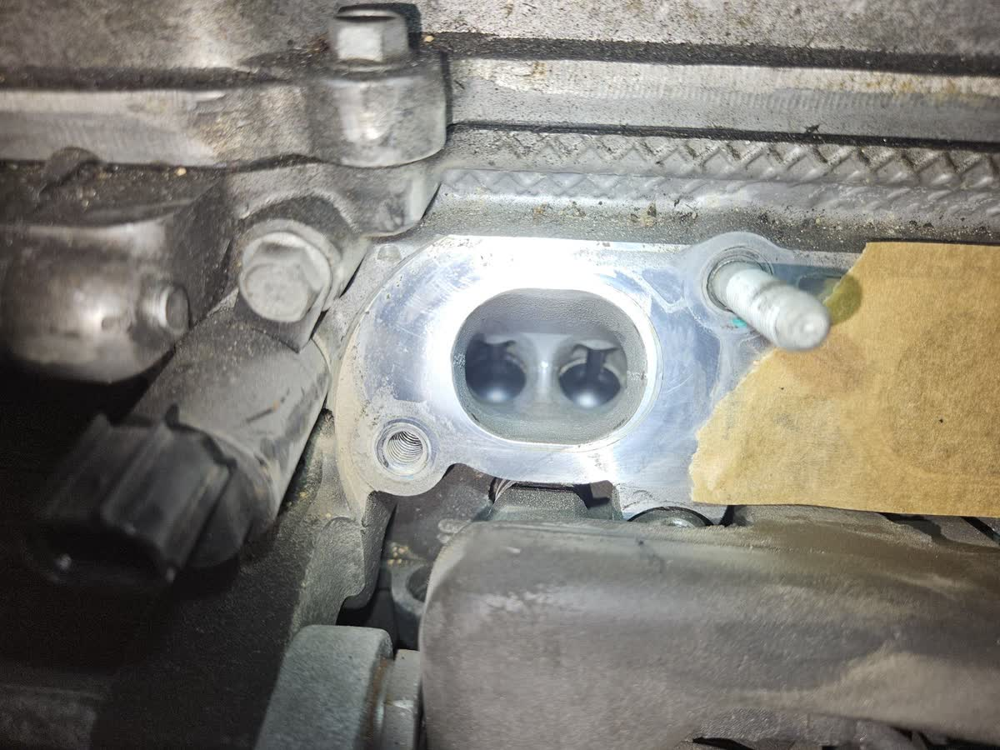
Folyamat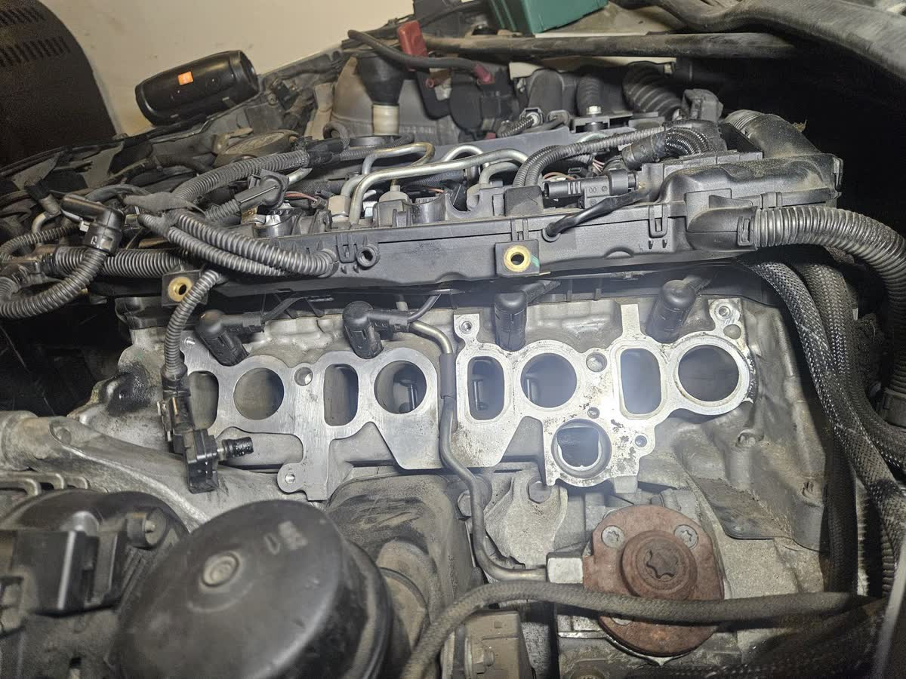
FolyamatSebészi precizitás, dokumentált folyamat. Minden munkafázisról fotót kapsz, az endoszkópos ellenőrzést a saját szemeddel láthatod.
Hibakód-olvasás, majd endoszkópos kamerával belenézünk a szívócsatornákba. Még a bontás előtt pontosan látod, mennyire kokszos a motorod.
Leszereljük a szívócsonkot — csak ennyit bontunk. A hengerfej, a vezérlés és a tömítési rendszer érintetlen marad.
A nem tisztítandó nyílásokat lezárjuk, az adott henger szelepeit zárt állásba forgatjuk — így egyetlen szemcse sem juthat az égéstérbe.
Nagynyomású levegővel dióhéj-granulátumot szórunk a csatornákba, miközben ipari vákuum szívja el a leváló kokszot és a szemcsét — zárt körfolyamatban.
Hengerről hengerre endoszkóppal ellenőrizzük és fotózzuk az eredményt. Ami nem fémtiszta, azt újraszórjuk.
Új tömítésekkel szereljük vissza a szívósort, töröljük a hibakódokat, majd próbaút után előtte–utána fotódokumentációval adjuk át az autót.
A dióhéj a Mohs-skálán kb. 2,5–3,5 — keményebb a ráégett koksznál, de lágyabb az alumíniumnál és az acélnál. Lepattintja a lerakódást, a szelepet és a hengerfejet viszont nem karcolja.
MOHS 2.5–3.5 / ALU-BIZTOSŐrölt dióhéj — biológiailag lebomló, vegyszermentes szóróanyag. Nincs oldószer, nincs agresszív kémia, nincs kockázatos "áztatás" a motorodban.
BIO GRANULÁTUM / 0% VEGYSZERA szórás és az elszívás egyszerre történik: a granulátum és a leváló koksz azonnal távozik. Semmi nem marad a szívórendszerben.
SZÓRÁS + VÁKUUM EGYIDŐBENUgyanezt az eljárást használják a BMW, VW és Audi márkaszervizek is a szívószelep-koksz eltávolítására — mert mechanikusan, láthatóan, ellenőrizhetően tisztít.
OEM-SZERVIZEK ÁLTAL IS ALKALMAZOTTHívj fel a motor típusával és a motorkóddal — 2 percben megmondjuk, érintett-e a motorod, és mennyibe kerülne a tisztítás.
Dióhéjas Szeleptisztítás Ózd — bontás nélküli szívószelep-koksztalanítás GDI, TSI, TFSI és dízelmotorokhoz, Ózd és környékén. Telefon: +36 70 803 1160.
+36 70 803 1160